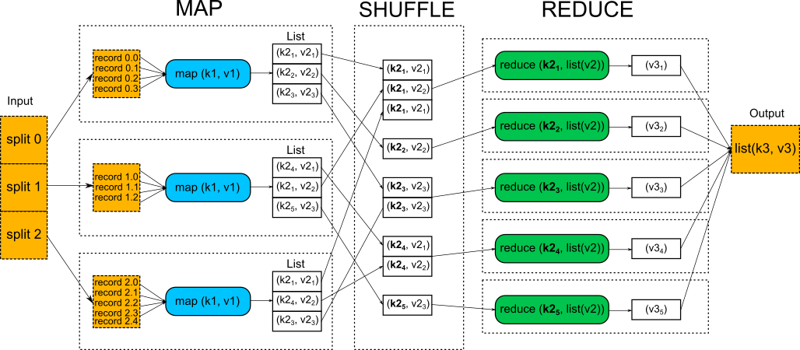
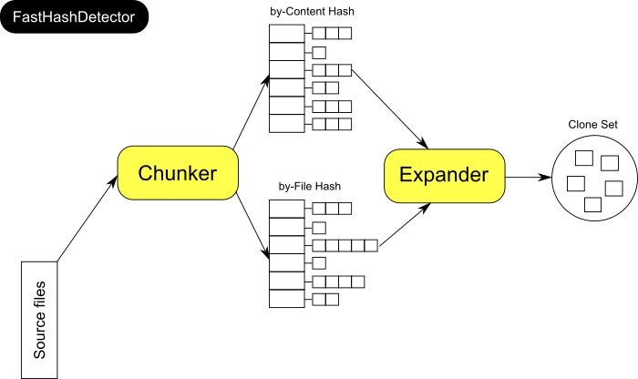
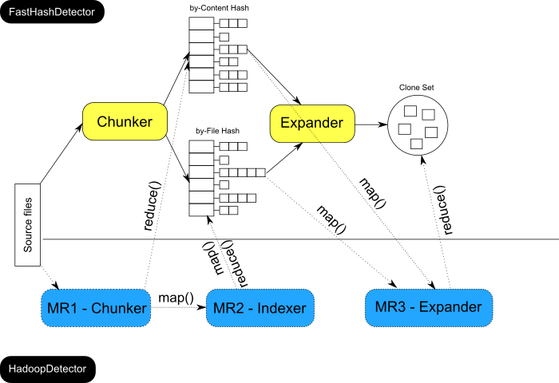

Sprint: Return of the Jedi
Table of Contents
1 About This Sprint
In this sprint, we run the clone detector in a distributed environment, allowing us to find clones in data that would not fit into the memory of a single machine.
2 User Stories covered in this Sprint
- As a developer, I want to understand (by example) what is necessary to port a local to a distributed computation.
- As a developer, I want to be able to tune a Hadoop installation in order to perform a distributed computation.
- As a manager, I want to get an overview and introduction into distributed computing in order to get a better understanding of its benefits and costs.
3 Introduction
In the previous sprint, we have improved our initial clone detection algorithm. While runtime performance increased and memory efficiency improved, code clone detection on the complete Qualitas corpus will likely reach the resource limits of a single (desktop or laptop) computer. We turn therefore out attention, finally, to distributed computing, particularly with Hadoop and MapReduce.
3.1 A MapReduce primer
The basic idea of MapReduce is simple and implementations of this divide and conquer paradigm can be found in databases (e.g. CouchDB, MongoDB) and functional programming languages (e.g. Java 8 with streams, Erlang, Map / Reduce functions in Common Lisp, JavaScript). In general, the two functions in MapReduce have the following responsibilities:
- map() applies a given function element-wise to a list of elements and returns a list of results
- reduce() aggregates the list of results from map() into a single result
It turns out, that a lot of data analysis problems fit (or can be rephrased to fit) into this algorithm. In addition, the algorithm can be parallelized, i.e. map() can be called in parallel where each instance of the function works on a subset of the input. Then, the reduce() function takes the responsibility to combine the results from the mappers and produces an aggregate result.
Analog MapReduce (inspiration for this example comes from here)
You work in a big company which plans to sell advertisement space on blogging websites. Your CEO is smart and knows that advertisements works best if they are seen by people who are interested in the advertised product or service. He therefore assigns you the task to collect statistics on the terms used on the top-100 blogging websites. By knowing which terms are used most on a website, you CEO thinks he can deduce what the site is about and show there relevant advertisements for readers. Each of the top-100 blogging sites has around 1000 articles, so you need to analyze 100.000 webpages in total. This sounds like a feasible task. However, your CEO is also a bit paranoid and tells you to not use any computer for the analysis. He thinks Google might spy on him. All you have is 10.000 people with their phones to access the web, pens, a lot of paper and a weeks time.
After some thinking you divide your workforce into 4 groups:
- The Mappers (9899)
- The Grouper (1)
- The Reducers (100)
- The Master (1, you)
You turn now to each group and explain them their task.
Mappers: Since you need to analyze 100.000 pages and have 9899 Mappers, each Mapper will get at most 11 web-pages randomly assigned (some Mappers will get lucky and fewer pages to read). The task of the Mapper is easy: in a long list, he notes down each term he has read on the assigned websites. In addition, he filters out any term that is not really useful for the analysis, so called stop-words (e.g. “and”, “the”, “when”, “to”, etc.). These stop-words are on a list where the Mapper can look them up. Eventually, the Mapper produces a list looking as follows:
- 1123, banana
- 1123, fruit
- 1123, banana
- 1123, apple
- 1124, banana
- 89322, chemistry
- 89322, experiment
- 89323, chemistry
- …
The first value is a web-page id (which is somewhere mapped to one of the top-100 blogs) and the second value is the encountered term on the web-page. It takes the 9899 Mappers 3 days to complete their task and they hand a pile of papers to the Grouper.
Grouper: The grouper has 100 piles of empty papers in front of him, each representing a blog. He knows the mapping between web-page id and the top-100 blogs. The Grouper scans through the lists he received from the Mappers, and, based on the first value in the list, chooses the correct pile (from the 100) where he notes down the list item (he doesn’t really need anymore the web-page id, so he discards it). Eventually, he ends up with something as follows:
Pile 0:
- banana
- fruit
- cheese
- banana
- venison
- chocolate
- cheese
- …
Pile 1:
- chemistry
- experiment
- chemistry
- explosion
- infirmary
- reaction
- school
- experiment
- …
Pile 99:
- …
The Grouper finishes after 2 days of mind numbing work. This task was not very difficult but quite boring after the first 5 minutes. He hands over his 100 piles to the Reducers.
Reducers: Each Reducer gets one pile from the Grouper, representing exactly one blog. His task is to count the term occurrences, sum them up and sort the resulting list of terms in descending order. The Reducer responsible for Pile 0 produces the following result:
Pile 0:
- cheese, 15
- banana, 11
- fruit, 10
- chocolate, 7
- venison, 3
- garlic, 1
- …
The Reducers are done with their job in less than a day and hand you over their results. You send the CEO a spreadsheet with the top-100 blogs and each of their top-10 used terms. Your CEO is very pleased with the result and starts to sell food-delivery service advertisements to the blog Pile 0, insurance company ads to blog Pile 1, and so on.
The next day, your CEO wants you to repeat the analysis for the 2.500.000 tweets of the top-1000 followed Tweeteronis. You decide that the advertisement business is not good for your mental health and quit your job.
The analogue MapReduce process illustrated above is a good metaphore to explain the basic idea of the algorithm. We discuss the 3 phases of the algorithm in more detail to understand the power of MapReduce. The figure below illustrates the overall MapReduce process. Input/output data is shown in orange, dashed boxes. Workes nodes executing the computation are shown in blue (map) and green (reduce). Key/value pairs that are passed between workers nodes are shown in white, solid boxed.

The input is split so that each Mapper receives a part of the input. The developer has full control over how the input is split. This is important as the number of splits determines how many Mappers are created. Each phase uses key-value pairs as input and output.
MAP: First, input splits are translated into records. The purpose here is to parse the data into records, but not parse the record itself. Depending on the format of the raw data, the developer has to choose an appropriate record reader or implement one based on the nature of the data. Then, the data is passed to the mapper in the form of key/value pairs (k1, v1). Usually the key in this phase is positional information (e.g. a line number and length of the record, or a file name) and the value is the chunk of data that composes a record. In the map function, code provded by the developer is executed on each key/value pair from the record to produce a list of new key/value pairs (k2, v2). Deciding on the content of the key and value here is central to the MapReduce algorithm. The key is what the data will be grouped on and the value is the information pertinent to the analysis in the reducer.
SHUFFLE: Based on the output keys from the map phase (k2), the data is redistributed such that all data belonging to one key is grouped together. The mechanics of the shuffle phase are to a large extent out of the control of the developer and are managed by the framework that implements MapReduce. The developer can however provide a custom comparator to control how the keys are grouped.
REDUCE: The reduce function takes the grouped data as input and runs the code provided by the developer once per key grouping. A wide range of processing can happen in this function, such as aggregation, filtering, and combination. Once the reduce function is done, it sends zero or more key/value pairs to the output.
While the principal idea behind MapReduce is simple, the technical implementation to achieve reliable, fault-tolerant, efficient parallelism is very complex. You can learn more about one of these implementations, Apache Hadoop, in this sprint.
3.2 Clone detection with MapReduce
In the previous two sprints of this assignment, we have gradually improved our clone detection algorithm. In this last sprint, we are going to express the detection algorithm as a series of MapReduce jobs. If you look at the implementation (see Experiential Learning), you will see that we did not change the core idea of the detection algorithm but tried to exploit the properties of the MapReduce programming model in order to solve the problem at hand. The figure below illustrates the major components and data structures we have used in the previous sprint to implement the detection algorithm.

The Chunker produces two hash tables of the same data (source files). One hash table is indexed by the content of the files, the other is indexed by the file names. The by-content hash table identifies clones (of the predefined minimum clone size), while the the by-file hash can be used to lookup file chunks by file name. The Expander uses these two hash tables to expand the identified clones (of size n) to their maximum size. Then, the Expander stores them in a set to filter out duplicate clones.
The image below illustrates how the three MapReduce jobs (dashed lines and boxes) map conceptually to the clone detection algorithm.

We have designed the HadoopDetector as a batch process where one MapReduce job provides input for the next.
MR1 - Chunker: As the Chunker in the FastHashDetector, this job reads the source files, parses them and creates chunks. The map() function has in this job two outputs:
- The first output is sent to the reduce() function has the chunk hash as key and the chunk (with its location information) as value.
- The second output is written to HDFS with the file name as key and its chunks as value.
Recall from the introduction on MapReduce that there is a shuffle() between the map() and reduce() that groups all key-value pairs emitted by map together, based on their key. This means that in our reduce() function, which receives a key and a list of values, we need only to check if the list contains more than 1 element. If yes, we have detected a clone of size n and the list contains the corresponding chunks. We write the key-value pairs, which logically correspond to the by-content hash in the FastHashDector, to HDFS which is then read by a later job, MR3 - Expander.
MR2 - Indexer: Recall that the expansion algorithm iterates over all identified clones and then expands them by looking at adjacent chunks. The purpose of the Indexer is to provide a means to find those adjacent chunks quickly. This MapReduce job is special as we do not need to implement any map/reduce functionality. All we do is to read in the second output produced by the mapper from MR1 (a Hadoop sequence file [4]) and write that data to a Hadoop map file [5]. This will produce a data structure that logical corresponds to the by-file hash used in the FastHashDetector.
MR3 - Expander: The last MapReduce job uses the data stored to the HDFS (clones of size n, file index) to find the largest possible clones. While the algorithm we have developed for the FastHashDetector does not change, we needed to adapt how the data is fed to the algorithm in the map() function. The reduce() function is then again trivial as the shuffle() groups equivalent clones together and we can simply ignore the list passed to the reduce() function and emit the clones, writing them to HDFS.
Now that we have a theoretical overview of the HadoopDetector, lets get to work and hadoop.
4 Learning Material
4.1 Further Reading
- HDFS Architecture
- The small file problem
- Hadoop storage formats
- Hadoop sequence files
- Hadoop map files
- YARN memory configuration (source 1 and 2)
5 Experiential Learning
The version of ClonyMcCloneface used in this sprint implements the ideas presented in the introduction. Again, your task is to complete some of the missing code, run the detector on different data sets and report on the observed results.
5.1 Setup your development environment
The same instructions as for the first sprint apply. If you did not do so yet, we highly recommend you to complete the Hadoop sprint before continuing with this assignment.
5.2 Get ClonyMcCloneface
- Download the version for ClonyMcCloneface for this sprint.
$ wget ftp://custsrv1.bth.se/FTP/ClonyMcCloneface/Return-of-the-Jedi.tar.gz
- Unpack the archive (it contains an eclipse project file, so you can import it directly into eclipse).
5.3 Getting the data into HDFS
Before we can start with any analysis we need to store the data in Hadoops’ Distributed Filesystem (HDFS). HDFS’s design documentation [1] discusses its assumptions and goals, one of which is very relevant for our analysis goal: file size. While HDFS exposes a filesystem namespace and allows user data to be stored in files, internally a file is stored in one or more blocks. These blocks are stored in a set of DataNodes which is, in general, one machine in the cluster of the distributed file system. Blocks are replicated among the DataNodes in order to achieve fault tolerance. The NameNode in an HDFS cluster manages the filesystem namespace (e.g. for looking up DataNodes and blocks) and regulates access to files by clients.
Now, how is all this related to file size? Each file is stored in one or more blocks. Having many small (“small” in this context means usually less than 64MB) files implies that there will be many blocks of small size, which in turn increases the overhead for the NameNode. This is known as the small file problem [2] (if you ask google, you’ll find a lot more resources and discussions on this).
Checkpoint question
- What is the average file size in the Qualitas corpus (only consider java files)?
The most common advice to solve the small file problem is to not using small files. This is a viable option if you are in control of data collection. In our case, an additional problem arises: our analytical goal requires us to differentiate between files (we want to identify clones in files). We could concatenate all files into one big one, and define a marker that designates file boundaries. In the analysis, we would then split the large file by this marker. This is however a clunky workaround and requires us to check that blocks are split at those markers.
In order to experience the small file problem first hand, copy the Qualitas corpus, unpacked, to HDFS.
Checkpoint question
- What is the transfer rate (MB/s) when copying data from your local file system to HDFS (use the Qualitas corpus as a benchmark)?
Trying to copy the Qualitas corpus, which consists of many small files, should illustrate you that transfer of data to HDFS can be a costly (time-wise) operation. Luckily, there is an alternative: create a sequence file [3] on your local file system, transfer it to HDFS and then use that as input for your MapReduce job. A sequence file is, in essence, nothing else than a binary key-value list that can be compressed and split in order to be distributed to worker nodes.
We have implemented a simple LocalToSequence converter in package se.bth.serl.clony.hadoop.localtoseq. Study the source code in order to understand its mechanics and then use it to convert the Qualitas corpus into a sequence file.
Checkpoint questions
- What is the key and what is the value in the sequence file?
- What is the size of the Qualitas corpus, stored in a sequence file?
- What is the transfer rate (MB/s) when copying the sequence file from your local file system to HDFS?
Now you have experienced and solved the small files problem in Hadoop.
5.4 Local Hadoop
As in the previous sprints, you need to complete some missing logic in the detector, marked again as TODOs in the code. The implementation tasks focus on the input/output data of the map() and reduce() functions.
Next, create a sequence file from a subset of the Qualitas corpus in order to test your implementation and Hadoop environment. Then, export the project as a jar file and run the clone detector. Note: You might need to adapt some of the Hadoop configurations in order to cater for your particular environment, especially memory parameters [6].
Checkpoint questions
- In case you encounter any challenges in running the HadoopDetector, briefly describe them and the identified solutions.
- Compare the FastHashDetector with the HadoopDetector in terms of memory use and runtime. Use both small and large data sets as input.
- How does the split size for MapReduce job 1 and 3 influence the runtime of the detector? Experiment with different values (see class
HadoopDetector) and describe the behavior.
5.5 Do we really need three MapReduce jobs?
Looking at the class HadoopDetector, you will notice that the secondary output of the first MapReduce job is a sequence file:
MultipleOutputs.addNamedOutput(chunkingJob, chunkingConf.get(CONFIG_CHUNKSNAMEDOUTPUT), SequenceFileOutputFormat.class, Text.class, ChunkArrayWritable.class);
The Indexer (MapReduce job 2) converts this sequence file into a map file.
Checkpoint question
- Is this second MapReduce (Indexer) job really necessary? Try to rewrite the application to use only 2 MapReduce jobs. What happens if you write immediately to a map file in the ChunkerMapper?
5.6 Distributed Hadoop
The last task in this assignment in to run the HadoopDetector on a distributed Hadoop cluster.
Checkpoint question
- What did you need to change (code and/or configuration) when transitioning from running the HadoopDetector on a local installation to running it on a distributed cluster?
- Compare the runtime between local and distributed clone detection?
6 Sprint Acceptance Tests
You are done with this sprint when:
- You have answered all checkpoint questions.
- You have compiled the answers into a report and sent it to the teacher.
- You have received a passing grade from the teacher.